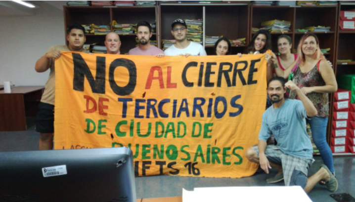

Estudios
Yo estudio en el IFTS num 16, siempre con la educacion pública!
El instituto de Formación Técnica Superior N°16 es un orgullo de Monte Castro. Público y gratuito, funciona en el turno vespertino en la Escuela Provincia de Misiones, desde hace años decenas de estudiantes cursan y se reciben de allí de Técnico Superior en Análisis de Sistemas. Luego de tres años de estudio, aprenden y manejan con ductilidad las últimas tecnologías, razón por la cual consiguen trabajo aún antes de finalizar sus estudios. A su vez, los títulos son oficiales, razón por la cual son muy valorados en el mercado laboral.
